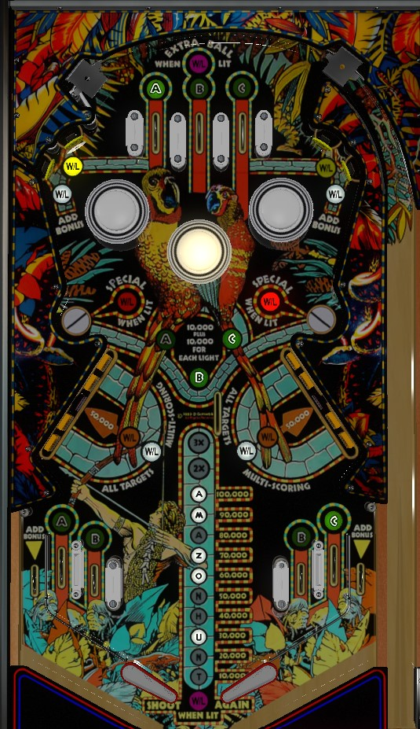

This is a solid state remake of Fast Draw / Quick Draw (Gottlieb, 1975) with very similar rules and scoring.
Lit rollover lanes, lit standup targets, and any drop target advance the bonus. Completing A-B-C awards 2x bonus, or converts your free 2x bonus into 3x on the last ball of the game. Each bonus advance is worth 10,000 points in base bonus. Once bonus is maxed and multiplier is increased, shoot drop targets; after clearing both banks, only the center target in each bank pops up each time, and that one target is worth 50,000 points.
A-B-C lanes score 5,000 points and a bonus advance when lit, or 500 points when not lit. Roll through a lit lane to unlight it. A can be collected from the leftmost top lane and far left in lane. B can be collected from the center top lane or either near in lane. C can be collected from the right top lane or far right in lane.
A, B, and C light the left, center, and right pop bumpers, respectively. All bumpers score 100 points when not lit or 1,000 when lit. Lighting A-B-C and clearing one of the two banks of drop targets will light the saucer above the completed bank for a special. Collecting all three of A-B-C increases the bonus multiplier from 1x to 2x on balls 1 and 2, or from 2x to 3x on ball 3, and also lights the center top lane for extra ball.
Two pairs: one in the upper left, one in the upper right. One target in each pair is lit at any given time. Lit targets score 5,000 points and a bonus advance. Unlit targets only score 500 points. The center pop bumper alternates which target in each pair is lit.
Score 10,000 points, plus an additional 10,000 for each letter in A-B-C that has been collected on that ball, for a maximum of 40,000 points. If A-B-C and one of the drop target banks have both been completed, the saucer on the same side as the completed bank will be lit for Special.
Each target down scores 5,000 points and a bonus advance. Completing both banks will cause the center target only in both banks to reset; this lone center targets score 50,000 points. If you hit the lone 50,000 target on both sides, the lone 50,000 targets will pop up again.
Amazon Hunt has a conventional in/out lane setup, but with a second in lane on each side in the position of a slingshot. All 4 in lanes score 5,000 points and a bonus advance when lit, or 500 when not lit. The far left in lane lights A, the far right in lane lights C, and both near in lanes light B. Both out lanes always score 500 points and a bonus advance.
Bonus is advanced by lit standup targets, drop targets, lit rollover lanes, and the out lanes. Each bonus advance scores 10,000 points in base bonus. Max base bonus is 190,000 points. Double bonus is given for free on the final ball of the game; on this ball, completing A-B-C turns the double bonus into triple bonus. Double bonus be lit on balls other than the final ball by completing A-B-C. There is no holdover for base bonus or multiplier and there is no mid ball bonus collect.
In competition/novelty play, extra balls and specials score 100,000 points.